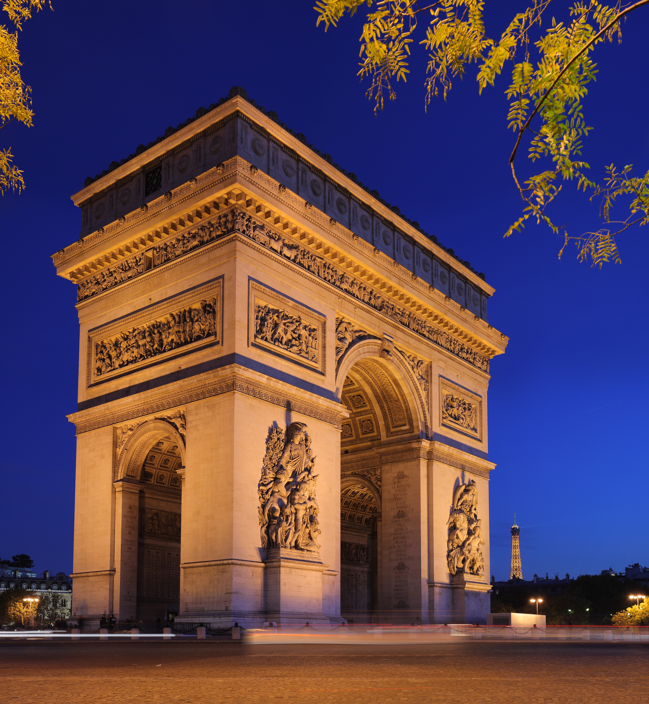
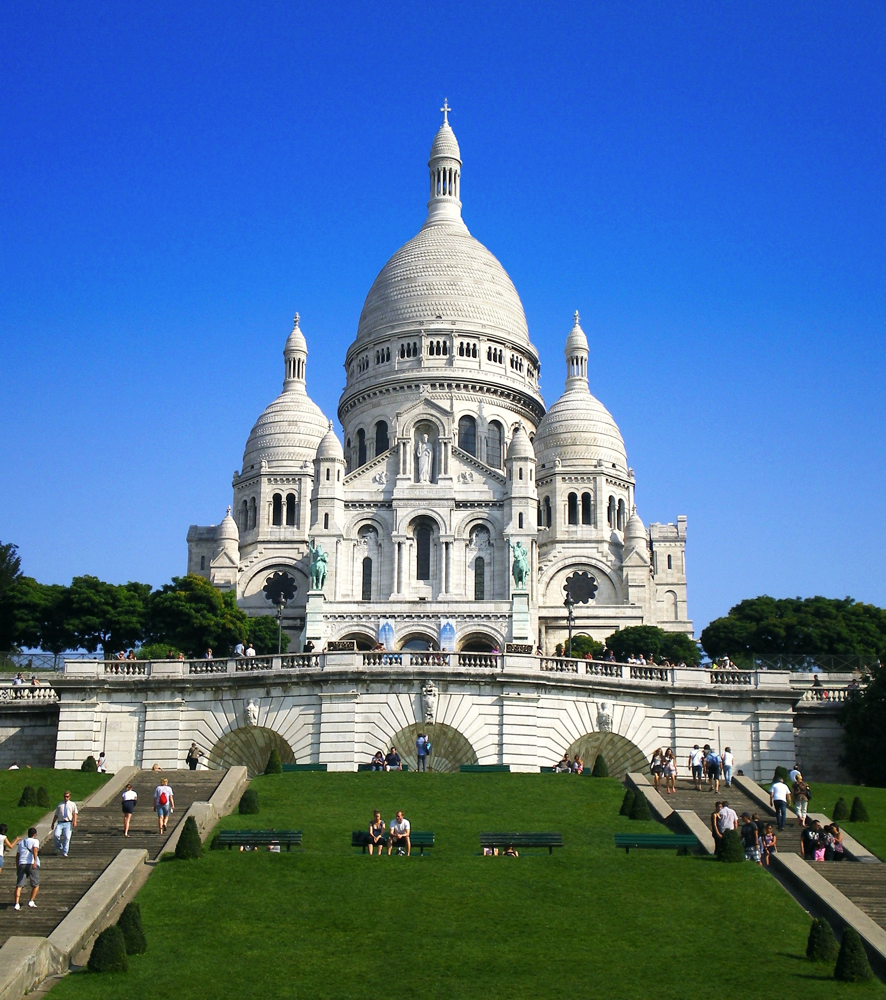
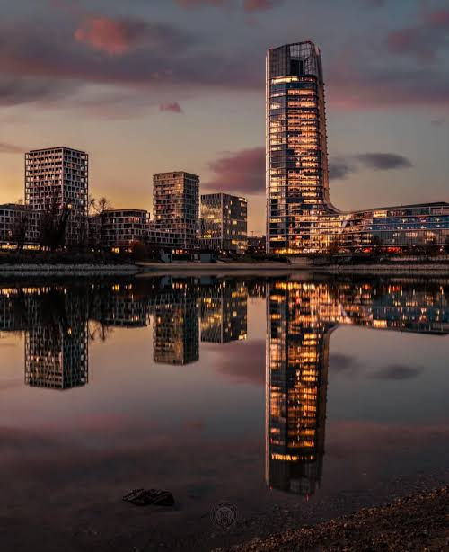
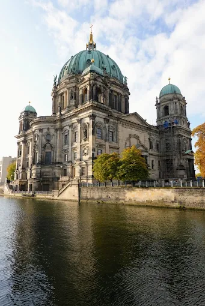
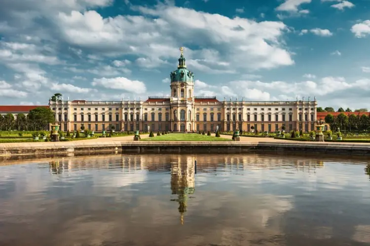
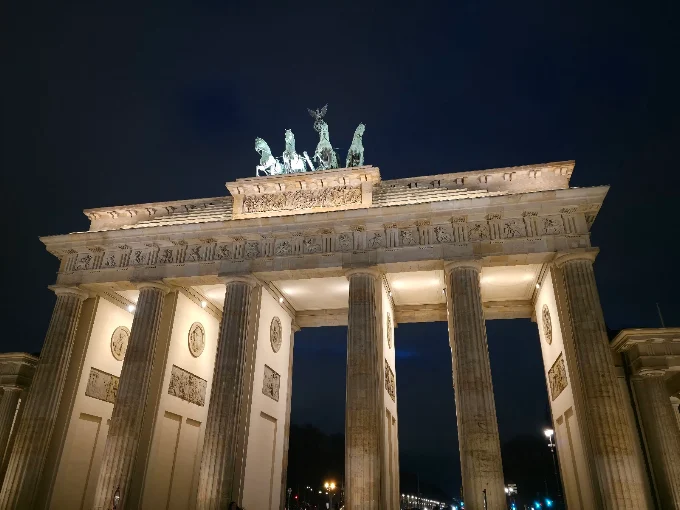

TORRE.jpg)
TORRE EIFFEL
A Torre Eiffel é um dos monumentos mais famosos do mundo e o principal símbolo de Paris, na França. Inaugurada em 1889, encanta milhões de turistas com sua arquitetura impressionante e sua vista panorâmica da cidade. À noite, suas luzes tornam a paisagem ainda mais mágica.

ARCO DO TRIUNFO
O Arco do Triunfo é um dos monumentos mais famosos de Paris, na França. Construído em homenagem aos soldados que lutaram pela França, destaca-se por sua arquitetura grandiosa e seus detalhes históricos. Localizado na famosa avenida Champs-Élysées, é um dos pontos turísticos mais visitados da cidade..

BASÍLICA DE SACRÉ COEUR
A Basílica de Sacré-Cœur é uma das construções mais encantadoras de Paris, localizada no alto da colina de Montmartre. Conhecida por sua arquitetura branca e imponente, oferece uma vista deslumbrante da cidade. É um importante ponto turístico, famoso por sua beleza, história e tranquilidade.

BRASÍLICA DE SANTO ESTEVÃO
A Basílica de Santo Estêvão, localizada em Budapeste, na Hungria, é uma das igrejas mais importantes e impressionantes do país. Com sua arquitetura grandiosa, cúpula majestosa e belos detalhes artísticos, encanta visitantes do mundo inteiro. É um símbolo da história, da cultura e da tradição húngara.

TORRE SKYDECK
A Torre SkyDeck, em Budapeste, é um ponto de observação que proporciona uma vista panorâmica incrível da cidade. De lá, é possível admirar os edifícios históricos, o rio Danúbio e as belas paisagens urbanas. É uma ótima opção para apreciar Budapeste de um ângulo diferente e registrar fotos inesquecíveis.

CRUZEIRO NOTURNO
O Cruzeiro Noturno de Budapeste é uma experiência encantadora pelo rio Danúbio, onde os visitantes podem admirar os monumentos históricos da cidade iluminados durante a noite. Durante o passeio, é possível contemplar o Parlamento Húngaro, as pontes e os edifícios históricos em uma atmosfera mágica e inesquecível.

BERLINER DOM
A Berliner Dom, também conhecida como Catedral de Berlim, é uma das construções mais impressionantes da Alemanha. Localizada na Ilha dos Museus, destaca-se por sua arquitetura grandiosa, cúpula imponente e belos detalhes interiores. É um dos principais pontos turísticos da cidade, encantando visitantes com sua história e beleza.

PALÁCIO DE CHARLOTTENBURG
O Palácio de Charlottenburg, localizado em Berlim, na Alemanha, é um magnífico palácio conhecido por sua arquitetura barroca e seus jardins elegantes. Construído no século XVII, foi residência da realeza prussiana e encanta os visitantes com seus salões luxuosos, obras de arte e paisagens deslumbrantes.

PORTÃO DE BRANDEMBURGO
O Portão de Brandemburgo, localizado em Berlim, na Alemanha, é um dos monumentos mais famosos do país. Construído no século XVIII, tornou-se um símbolo de paz, liberdade e reunificação alemã. Com sua arquitetura neoclássica imponente, é um dos pontos turísticos mais visitados da cidade.